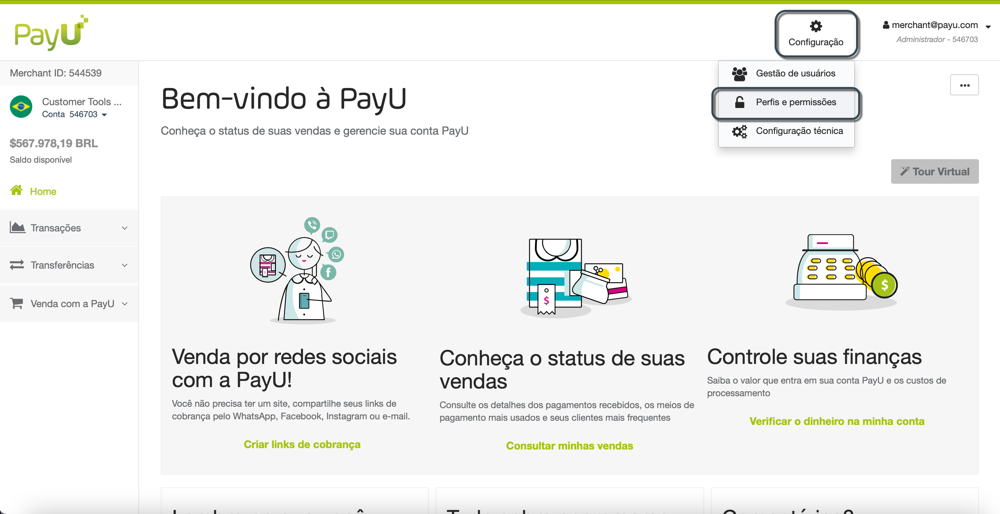
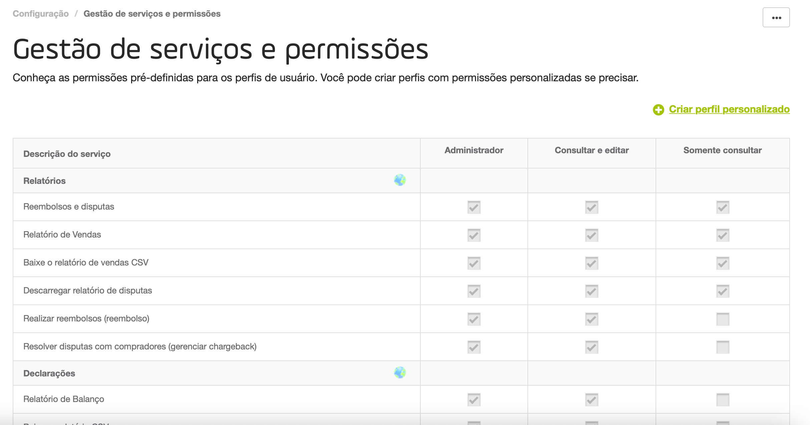
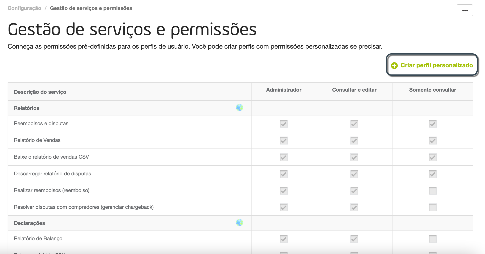
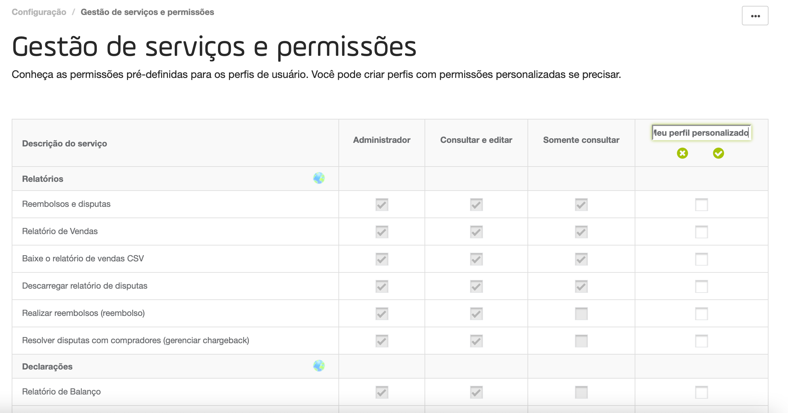
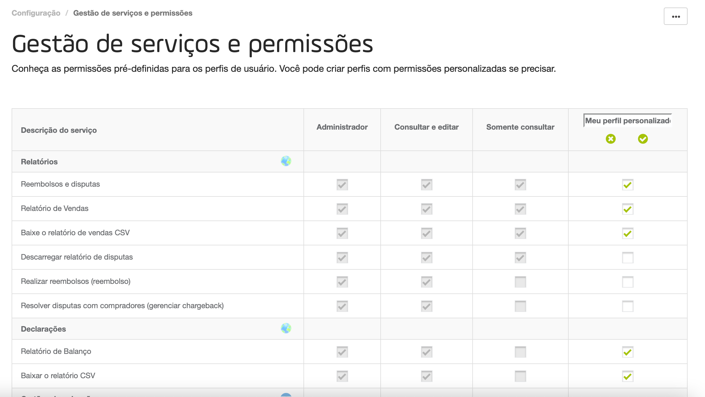
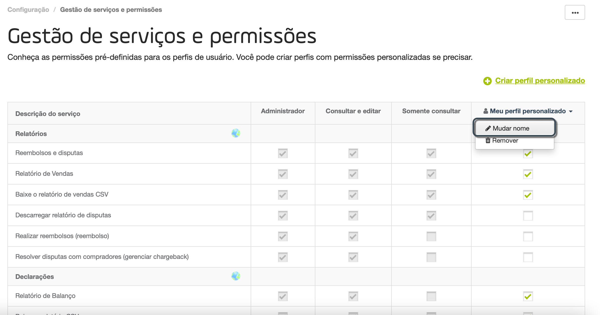
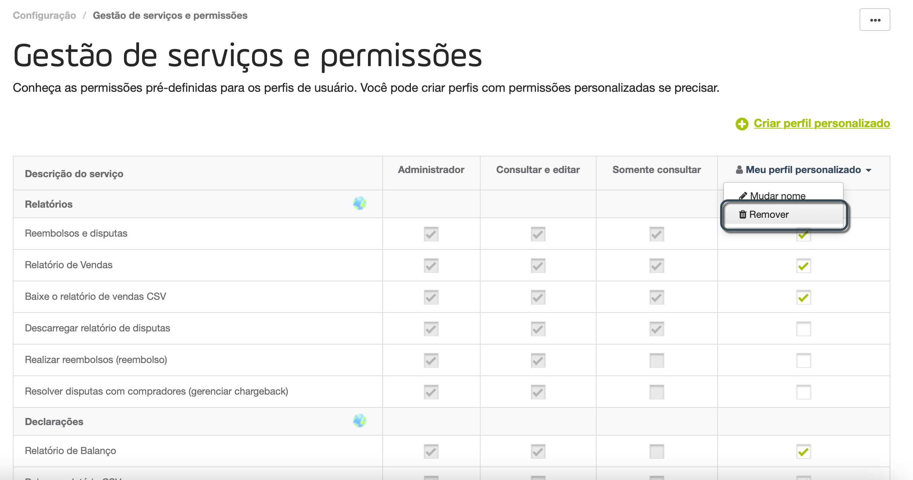
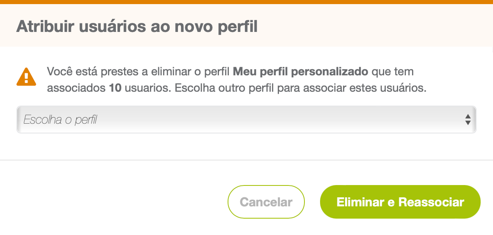

Gerenciamento de perfis e permissões
Um Perfil é uma série de permissões para que um usuário acesse um recurso de um conta. Um usuário usando um perfil pode acessar quantas contas houver em cada comércio.
Para obter mais informações sobre comércios, contas e muito mais, leia conceitos por trás do Módulo PayU.
Permissão necessária
Para ter acesso a este módulo, você precisa ter um perfil com a seguinte permissão habilitada:
- Listar Perfis
- Gerenciar Perfis
Perfis padrão
Por padrão, PayU fornece três perfis para que seus usuários acessem as contas. Esses perfis são:
- Administrador: este perfil habilita todas as permissões da conta. Um usuário com direito a este perfil pode criar, consultar, atualizar e excluir (ou desabilitar) as informações relacionadas à conta. Além disso, este usuário pode ver e baixar todos os relatórios, visualizar as informações técnicas, resolver disputas, gerenciar usuários, realizar transferências e gerenciar perfis.
- Consultar e editar: este perfil é equivalente a um perfil de manager. Um usuário com direito a este perfil pode criar, consultar, atualizar e excluir (ou desabilitar) as informações relacionadas à conta. Além disso, esse usuário pode ver e baixar todos os relatórios, ver as informações técnicas, resolver disputas e revisar os usuários e perfis criados.
- Somente consultar: este perfil pode acessar a conta no modo somente leitura. Um usuário com direito a este perfil pode criar e consultar as informações relacionadas à conta, baixar alguns dos relatórios e visualizar as transferências da conta. Além disso, este usuário não pode ver os detalhes técnicos ou ter acesso aos usuários e perfis.
Esses perfis não podem ser excluídos e suas permissões são fixas. Se alguma dessas permissões não atenderem às suas necessidades, você deve criar uma.
Gerenciamento de perfis e permissões
Para gerenciar usuários, abra sua conta PayU e clique no menu Configuração na parte superior da tela. Em seguida, selecione Perfis e permissões.

O módulo Gestão de serviços e permissões abrirá. Aqui você encontra uma tabela com todas as permissões de acesso ao módulo PayU e os perfis com acesso a eles.

Criar perfis
Quando nenhum dos perfis padrão atende aos seus requisitos, você pode criar um e atribuir um conjunto personalizado de permissões. Para criar um perfil, siga estas etapas.
- No módulo Gestão de serviços e permissões, clique Criar perfil personalizado.

- Uma nova coluna é adicionada à tabela. Forneça um nome significativo para seu perfil personalizado.

- Depois de definir o nome, você pode atribuir quantas permissões precisar, clicando na caixa de seleção de cada linha.

- Quando terminar, clique em Salvar configuraçãos. Se você clicar em Apagar mudanças, o perfil não será salvo e a coluna será excluída da tabela.
Editar perfis
Ao editar um perfil, você pode renomeá-lo, além de atribuir ou remover permissões.
-
Para renomear um determinado perfil, clique no símbolo▾ ao lado de seu nome. Clique em Mudar nome.

Isso permite que o campo de nome do perfil atualize. -
Para atribuir ou remover uma permissão, basta clicar na caixa de seleção da permissão
Quando terminar, clique em Salvar configuraçãos. Se você clicar em Apagar mudanças, todas as alterações de renomeação e alteração de permissão serão descartadas.
Apagar perfis
Para excluir um determinado perfil, clique no símbolo▾ ao lado do nome dele. Clique em Remover.

Se houver usuários com direito ao perfil que você está prestes a excluir, será solicitado que você defina um novo perfil para eles. Selecione o novo perfil no menu suspenso e clique em Eliminar e eassociar.

Assim que você apagar o perfil, sua coluna será removida da tabela e nenhum usuário poderá ter este perfil.